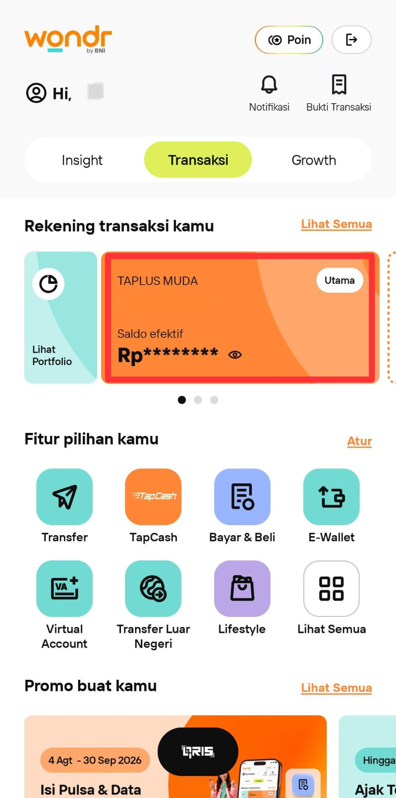
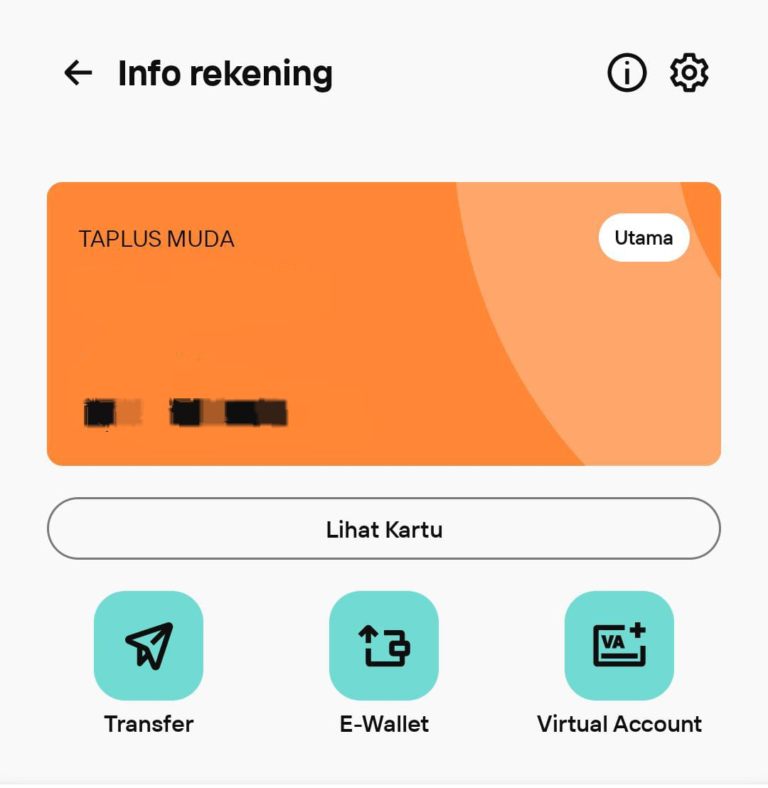
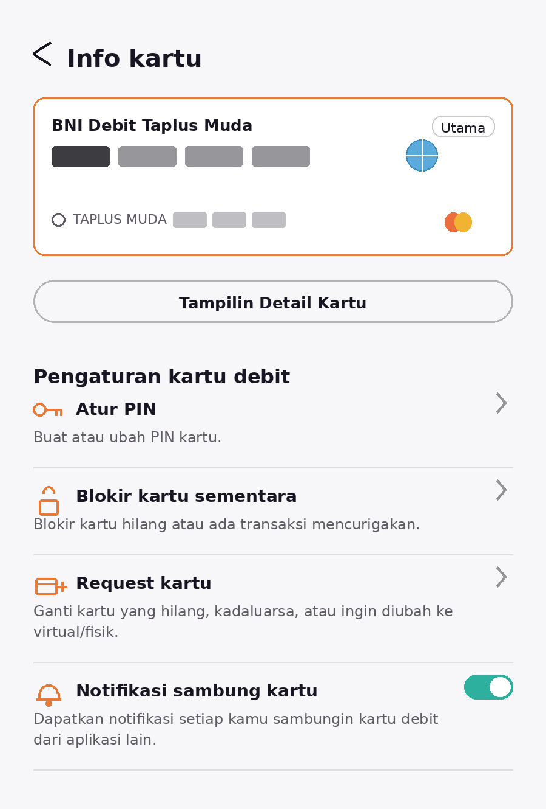

Reset PIN Kartu Debit
Scroll ke bawah untuk mengikuti panduan.
STEP 01
Buka wondr dan Pilih Rekening

Buka aplikasi wondr by BNI, kemudian pilih rekening yang kartu debitnya akan di-reset PIN.
STEP 02
Pilih Menu "Lihat Kartu"

Setelah memilih rekening, pilih menu "Lihat Kartu" untuk melanjutkan proses.
STEP 03
Pilih "Atur PIN" dan Buat PIN Baru

Pilih menu "Atur PIN", kemudian buat PIN baru sesuai petunjuk yang diberikan pada aplikasi.
Reset PIN Berhasil!
Reset PIN kartu debit telah selesai. Pastikan PIN baru Anda selalu dirahasiakan.